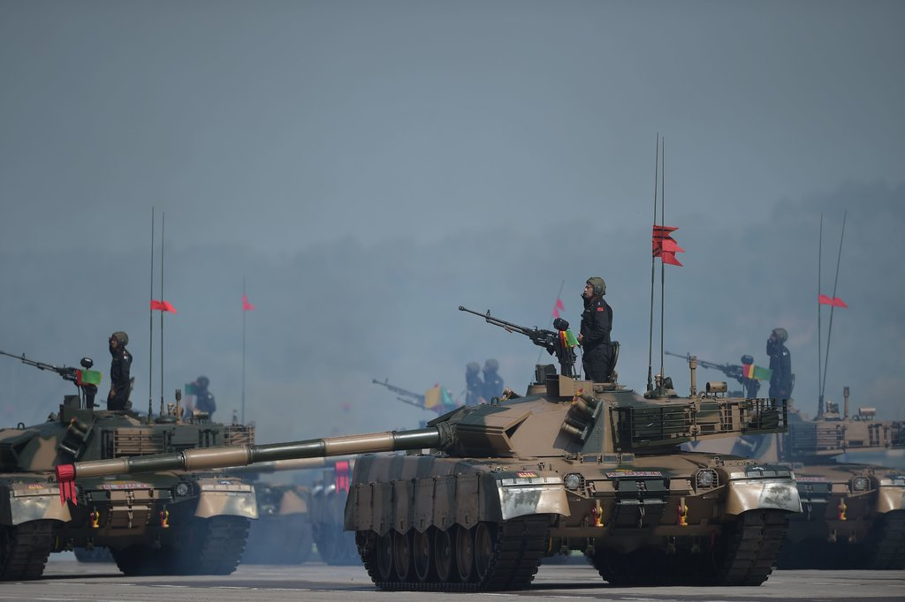
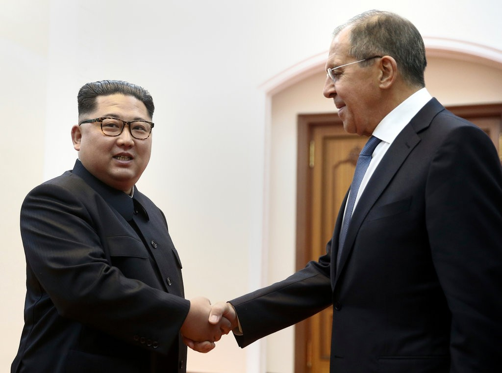

Putin Moves to Capitalize on Europe’s Fury With Trump
Russia’s goals of shedding European sanctions and regaining respectability suddenly seem in reach as the U.S. treats its allies as trade rivals.
Russia’s goals of shedding European sanctions and regaining respectability suddenly seem in reach as the U.S. treats its allies as trade rivals.

Greece’s long feud with the Balkan neighbor that claims the same ancient name as its northern region is inching toward a deal. But feelings still run high.
 Journalists have been abducted, news outlets blocked and the main party pressured, as the army declares its critics “anti-state.”
 Can someone change so quickly? A summit meeting with President Trump will test the North Korean leader’s radical transformation.